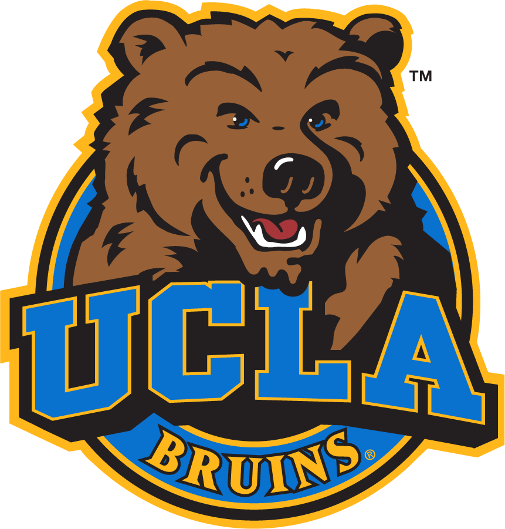

Hello World!
My name is Matthew Napoli.
I'm currently a student at Carnegie Mellon's M.S. in Computational Finance program.
My interests include:
- Stochastic processes
- Game theory
- Financial markets
- Algorithmic trading
I also hold a a B.S. in Mathematics & Economics w/ a specialization in Computing from UCLA.
(Go Bruins!
)
Here are some useful links of mine:
- Resume
- LinkedIn
- Github
- Leetcode